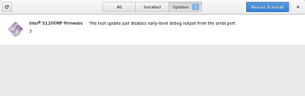
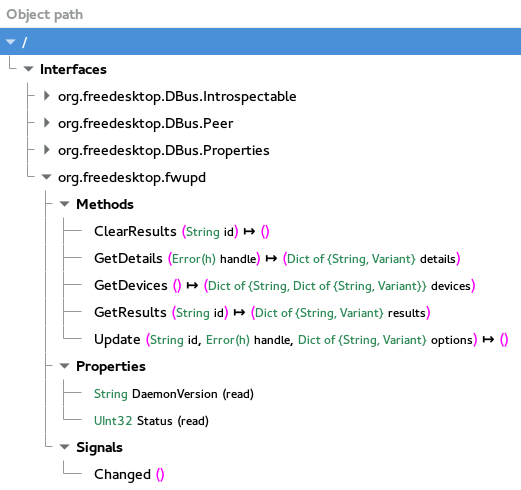

fwupd is a simple daemon to allow session software to update device firmware on your local machine. It's designed for desktops, but this project is also usable on phones, tablets and on headless servers. You can either use a GUI software manager like GNOME Software to view and apply updates, the command-line tool or the system D-Bus interface directly.
New versions of GNOME Software will show and auto-download pending updates automatically:

Double clicking on the cab file is also supported:
fwupd ships a command line fwupdmgr program.
This allows administrators to get the list of upgradable devices,
schedule offline updates or installing firmware on the live system.
$ fwupdmgr get-devices Device: ro__sys_devices_pci0000_00_0000_00_1d_0_usb2_2_1_2_1_4_2_1_4_1_0 DisplayName: USB 3.0 VL812 B2 Hub Provider: Udev Guid: 26470009-97a8-4028-867a-bbbac6ee7bf0 Version: 9090 Internal: False AllowOnline: False AllowOffline: False Device: ro__sys_devices_pci0000_00_0000_00_01_0_0000_01_00_0 DisplayName: Barts LE [Radeon HD 6790] Provider: Udev Guid: e9b8eebd-b5f8-18d4-9fbd-d7da7711985c Version: 013.012.000.019.000000 Internal: False AllowOnline: False AllowOffline: False Device: CHug-usb:00:01:04:04 DisplayName: ColorHugALS Provider: ColorHug Guid: 84f40464-9272-4ef7-9399-cd95f12da696 Version: 4.0.0 Internal: False AllowOnline: True AllowOffline: True
You can see all the command line options using --help:
$ fwupdmgr --help Usage: fwupdmgr [OPTION…] clear-results Clears the results from the last update dump-rom Dump the ROM checksum get-details Gets details about a firmware file get-devices Get all devices that support firmware updates get-results Gets the results from the last update get-updates Gets the list of updates for connected hardware install Install a firmware file on this hardware install-prepared Install prepared updates now refresh Refresh metadata from remote server update Updates all firmware to latest versions available verify Gets the cryptographic hash of the dumped firmware verify-update Update the stored metadata with current ROM contents Help Options: -h, --help Show help options Application Options: -v, --verbose Show extra debugging information --offline Perform the installation offline where possible --allow-reinstall Allow re-installing existing firmware versions --allow-older Allow downgrading firmware versions
If there are supported devices available then the fwupd daemon will be launched when queried for the first time. This exports an interface that can be queried from any language with a D-Bus binding such as C, Python or Java.

$ $ gdbus call --system --dest org.freedesktop.fwupd --object-path / --method org.freedesktop.fwupd.GetDevices
({'ro__sys_devices_pci0000_00_0000_00_1d_0_usb2_2_1_2_1_4_2_1_4_1_0':
{'Vendor': <'VIA'>,
'Guid': <'26470009-97a8-4028-867a-bbbac6ee7bf0'>,
'DisplayName': <'USB 3.0 VL812 B2 Hub'>,
'Provider': <'Udev'>,
'Version': <'9090'>,
'Flags': },
'ro__sys_devices_pci0000_00_0000_00_01_0_0000_01_00_0':
{'Vendor': <'Advanced Micro Devices, Inc. [AMD/ATI]'>,
'Guid': <'e9b8eebd-b5f8-18d4-9fbd-d7da7711985c'>,
'DisplayName': <'Barts LE [Radeon HD 6790]'>,
'Provider': <'Udev'>,
'RomFilename': <'/sys/devices/pci0000:00/0000:00:01.0/0000:01:00.0/rom'>,
'Version': <'013.012.000.019.000000'>,
'Flags': },
'CHug-usb:00:01:04:04':
{'Guid': <'84f40464-9272-4ef7-9399-cd95f12da696'>,
'DisplayName': <'ColorHugALS'>,
'Provider': <'ColorHug'>,
'Version': <'4.0.0'>,
'Flags': }},)
By default, any users are able to install firmware to removable hardware. The logic here is that if the hardware can be removed, it can easily be moved to a device that the user already has root access on, and asking for authentication would just be security theatre.
For non-removable devices, e.g. UEFI firmware, admin users are able to update trusted firmware without the root password. By default, we already let admin user and root update glibc and the kernel without additional authentication, and these would be a much easier target to backdoor. The firmware updates themselves are signed and have a checksum, and the metadata describing this checksum is provided by the distribution either as GPG-signed repository metadata, or installed from a package, which is expected to also be signed.
No user interaction should be required when actually applying updates. Making it prohibited means we can do the upgrade with a fancy graphical splash screen, without having to worry about locales and input methods. Updating firmware should be no more dangerous than installing a new kernel or glibc package.